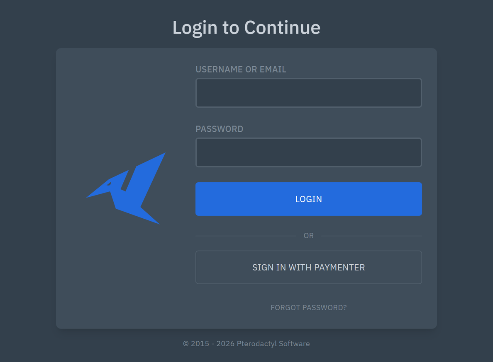
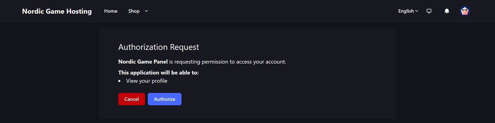
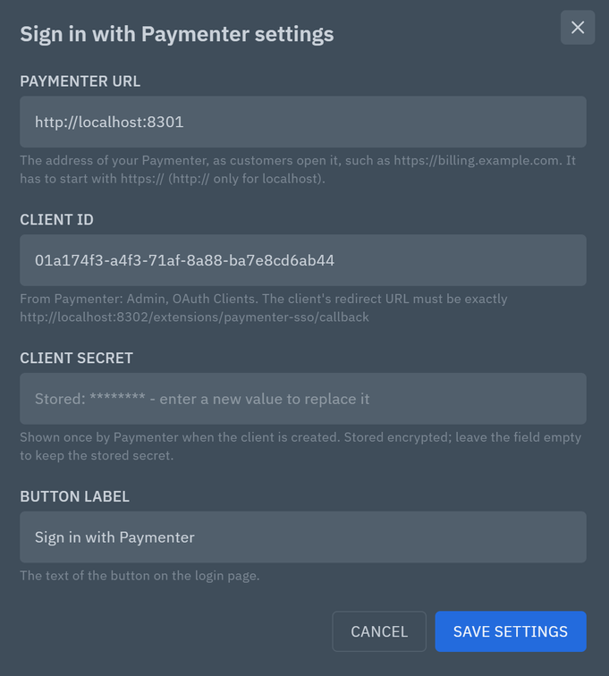
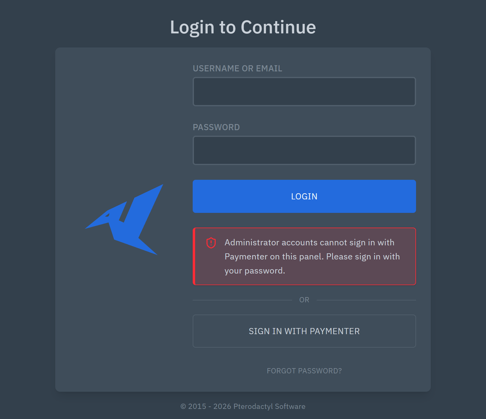

Sign in with Paymenter for Pterodactyl 2.0
A Sign in with Paymenter button on your Pterodactyl 2.0 login page. Customers who bought their server in your Paymenter store click it, approve on Paymenter's page, and land in their own panel account: no second password to remember.
Tested with Pterodactyl 2.0.0-beta.2 and Paymenter 1.5.9. Uses Pterodactyl 2.0's official extension system. The same release zip is also on Gumroad.

What it does
- A "Sign in with Paymenter" button below the login form, with your own label if you like. It only appears once the extension is set up.
- Uses Paymenter's built-in OAuth server (Admin → OAuth Clients): no Paymenter extension to install.
- Finds the right account. The first time, the panel account with the same email address, only if Paymenter has verified that address. After that, the customer's Paymenter account itself, so changing the email address in Paymenter does not lock anyone out.
- Refuses clearly. No panel account with that address, an unverified address, or an administrator: the login page says why. It never creates accounts.
- Keeps two-factor authentication. Accounts with 2FA get the panel's own Device Checkpoint after Paymenter.
- Administrators stay on passwords unless you allow them (off by default).
- Back where they were going: a customer sent to the login page from a server page lands on that server.

Security
- OAuth 2.0 authorization code flow with
state(single use, 10 minutes, bound to the browser's session) and PKCE (S256). - The exact redirect URL is fixed by your panel's
APP_URLand checked by Paymenter. - Starting a sign-in needs the panel's CSRF token; the steps share the panel's sign-in rate limit (10 per minute per IP).
- The session is made by the panel's own login code: new session id, the usual activity entries, 2FA.
- Every sign-in and refusal is written to the panel's activity log (
paymenter-sso:login,paymenter-sso:refused). - The client secret is stored encrypted, shown only as a mask and never sent to a browser. Paymenter's access token is used once and not stored.
- HTTPS to Paymenter is required (http only for localhost); requests time out after 10 seconds and do not follow redirects.


Install
Download paymenter-sso-ptero2-1.0.0.zip from the latest release and install the paymenter-sso.pteroext inside it on the panel server:
cd /var/www/pterodactyl
php artisan p:extension:install /path/to/paymenter-sso.pteroext --enable
chown -R www-data:www-data extensions public/assets/extensionsUse your web server's user in chown (in the official Docker image it is nginx). Then:
- In Paymenter: Admin → Other → OAuth Clients → New OAuth Client. Redirect:
https://your-panel/extensions/paymenter-sso/callback(your panel'sAPP_URL). Copy the client secret and the client ID. - In the panel: Admin → Extensions → Sign in with Paymenter → Settings: Paymenter URL, client ID, client secret.
- Open the login page in a private window: the button is below the Login button.
Compatibility
| Panel | Pterodactyl 2.0, tested with 2.0.0-beta.2 (PHP 8.4). Does not run on Pterodactyl 1.x. |
|---|---|
| Paymenter | Paymenter 1.x with its OAuth clients, tested with 1.5.9 |
| Network | Paymenter reachable from the panel server at the same address customers use, over HTTPS (http only on localhost). Different domains are fine. |
| Matching by email needs verified addresses in Paymenter (its verification email, or an admin's "Email Verified" switch) |
Troubleshooting
| What you see | What to do |
|---|---|
| No button on the login page | All three of Paymenter URL, client ID and client secret must be saved, and the URL must be valid. |
invalid_client on Paymenter | The client ID is wrong, or the client's redirect URL is not exactly the one in the extension's settings (it must match APP_URL). |
| The email address of your Paymenter account is not verified yet | The customer opens the link in Paymenter's verification email, or an admin switches on Email Verified on the user. |
| No panel account uses the email address of your Paymenter account | The panel account has another address, or does not exist yet. |
Every setting, how customers are matched, all messages and uninstalling: README on GitHub.
Want one-click access from Paymenter and billing in the panel?
Karelia Bridge is the paid add-on for Paymenter and Pterodactyl 2.0. Customers click Open control panel in Paymenter and land on their server, signed in. Every server gets a Billing page with the next due date, the price and unpaid invoices, and a banner before payment is due. The two work side by side: install both for the login button and the one-click links.
FAQ
Do I need Karelia Bridge or another Paymenter extension?
No. This works with Paymenter's own OAuth clients and any way you create panel accounts (Paymenter's Pterodactyl server extension creates them with the customer's email).
Why does Paymenter show its Authorize page every time?
Without it, a customer who had to sign in to Paymenter first would be left on Paymenter's login page (Paymenter 1.5.9 loads the next page with JavaScript, which browsers do not let follow the redirect back to the panel). One click keeps it reliable.
Can it be used with Pterodactyl's official SSO extension?
Yes, both can be installed; both sets of buttons show. This is a separate extension because the official one has no administrator protection, rate limit or activity entries for providers, and a provider would have to be copied into it after every update.
Does it create panel accounts?
No. Customers without a panel account get a clear message.
More about Sign in with Paymenter: karelialabs.com. More tools from the same team: karelialabs.com/tools.